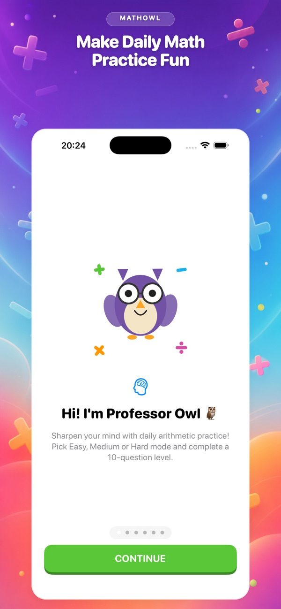
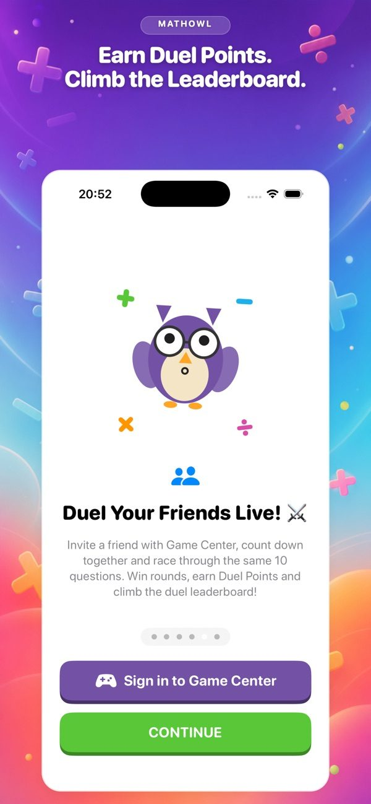
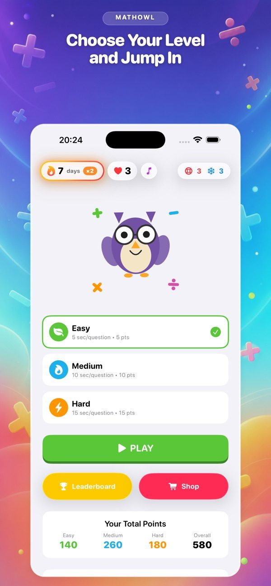
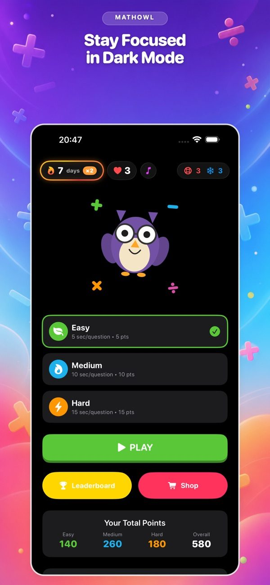
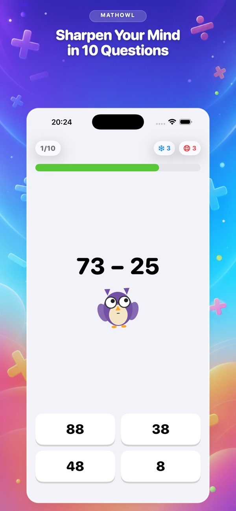
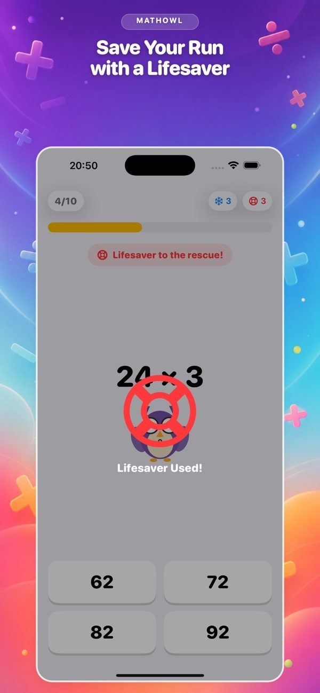
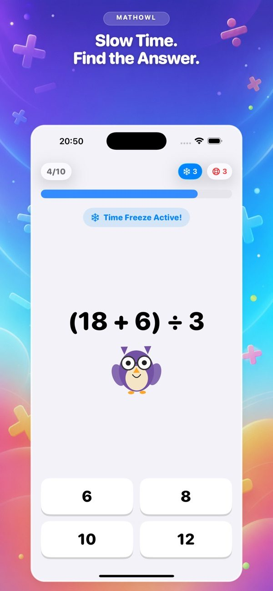
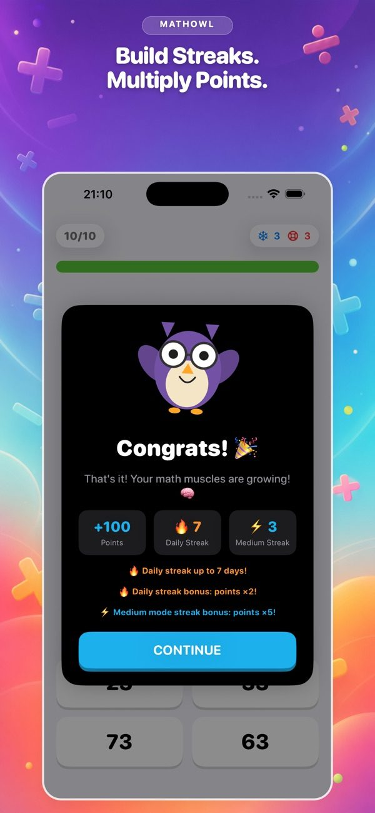
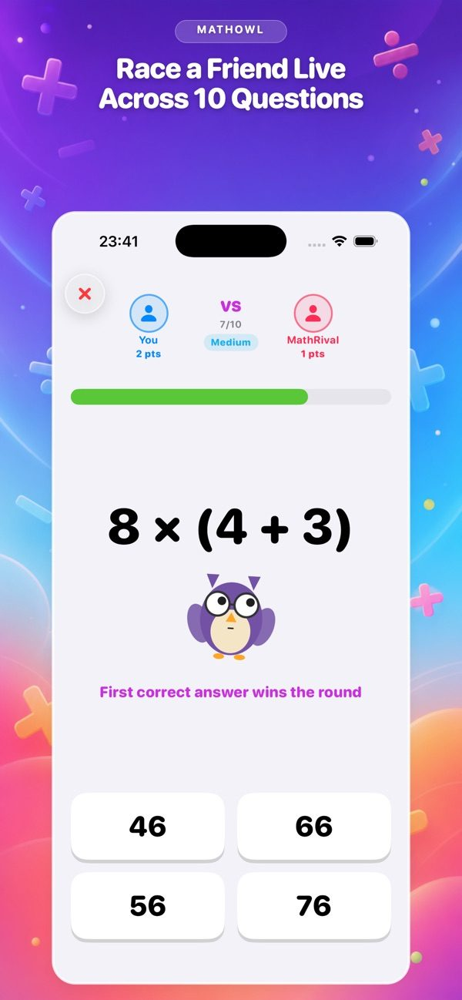
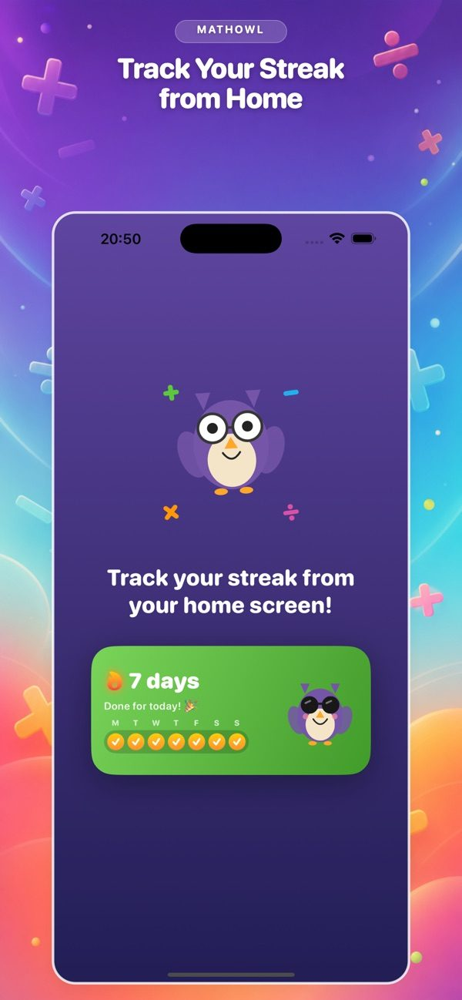

On soruluk bölümler
Toplama, çıkarma, çarpma ve bölme işlemlerinde kısa bölümlerle pratik yap; hızını adım adım geliştir.
Profesör Baykuş ile zihinden işlem hızını geliştir. Kısa günlük alıştırmalarda serini koru veya arkadaşlarınla canlı düelloya gir.

Ekran görüntüleri










Her gün biraz daha hızlı
Toplama, çıkarma, çarpma ve bölme işlemlerinde kısa bölümlerle pratik yap; hızını adım adım geliştir.
Aynı işlemleri gerçek zamanlı çöz, doğru cevabı önce ver ve canlı düelloyu kazan.
Günlük serini koru, Game Center liderlik tablosunda yüksel ve ilerlemeni ana ekran widget'ından takip et.
MathOwl ile ilgili bir sorun veya soruyu e-postayla ilet.
E-posta gönder →MathOwl'un hesap istemediğini, ilerlemeni cihazında tuttuğunu, reklam ve çökme raporlarında hangi verilerin kullanıldığını öğren.
Politikayı oku →